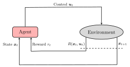
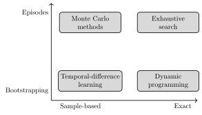
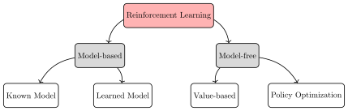

强化学习
在相关章节中，我们介绍了确定性与随机序贯决策问题，并展示了如何利用动态规划求解它们。然而，这些方法存在两大主要局限：(i) 它们通常假设完全已知系统动力学；(ii) 其计算复杂度随状态空间维数呈指数增长。在本章中，我们对强化学习（Reinforcement Learning，RL）注4. Bertsekas, D. Reinforcement learning and optimal control. Athena Scientific, 2019.注5. Sutton, R., Barto, A. Reinforcement learning: An introduction. MIT Press, 2018.领域进行介绍与概述。从高层来看，强化学习可以描述为「学习该做什么」的问题——即学习从状态到控制动作的映射——其目标是最大化累积数值奖励。更具体而言，强化学习将通过交互进行学习的过程形式化。智能体不需要被明确告知应采取哪些正确动作，而是必须仅在来自环境的反馈指导下，通过试错来发现有效策略。至关重要的是，与前一章讨论的方法不同，强化学习不需要系统动力学的先验知识，甚至不需要环境的完全可观测性。这使得它成为在复杂且不确定环境中进行自主决策的高度通用且实用的框架。
本章首先在 18.1 节介绍强化学习问题的关键概念与理论基础。接着在 18.2 节中，我们引入基于精确动态规划的强化学习算法，借鉴相关章节中的思想。针对动态规划在实际中的局限性，我们在 18.3 节引入两种基础的无模型学习范式：蒙特卡洛方法与时序差分学习。最后，在 18.4 节介绍强化学习算法的分类体系之后，我们分别在 18.5 节和 18.6 节讨论广泛使用的无模型算法与基于模型的算法。
强化学习问题
强化学习的核心是为基于学习的决策提供一套数学形式化体系。虽然具体的数学表述——需要在部分已知的马尔可夫决策过程（Markov decision process，MDP）中求解最优控制问题——将在本章余下部分详细阐述，但其基本思想非常简单：刻画一个学习型智能体为实现某一目标随时间与环境进行交互的核心要素。
在机器学习范式全景中，存在若干强化学习所独有的关键区别与特定挑战。
无导师学习
监督学习可以说是机器学习中被研究最广泛的范式，它假设可以获得由专家导师提供的带标注样本数据集，其目标是学习模仿导师的行为。尽管在许多场景下极为有效，但该范式并不适用于交互式决策问题——在这些问题中，标注数据无法获取或获取成本极高。相比之下，强化学习从根本上关注从交互中学习，其中智能体不会被告知该采取哪些动作，而是必须仅在环境以奖励或惩罚形式给出的评估性反馈指导下，通过试错来进行学习。显式导师的缺失带来了一系列独特的挑战。
探索与利用
在强化学习中，智能体必须解决探索（exploration）与利用（exploitation）之间的内在权衡。一方面，它必须探索环境以发现可能带来高奖励的动作；另一方面，它必须利用当前已知知识来最大化累积奖励。仅关注探索会导致智能体无法利用已学到的经验，而仅关注利用则面临收敛到次优策略的风险。因此，有效的学习要求智能体明智地平衡这两种行为——尝试多样化的动作，同时逐步集中在产生最高回报的动作上。这种权衡在其他学习范式中基本不存在，并且仍然是强化学习的标志性挑战。
延迟奖励
在许多现实世界问题中，来自环境的反馈是延迟或稀疏的。奖励可能仅在执行了一系列动作之后才能被观测到——例如在国际象棋中，胜负结果只有在对局结束时才会揭晓。这种延迟反馈带来了信用分配（credit assignment）的挑战，使智能体难以确定哪些动作促成了所观测到的结果。
数据非独立同分布
许多统计学习理论的基础核心假设是数据点独立同分布（i.i.d.）。强化学习显然违背了这一假设：智能体收集的数据本质上是序列化且高度相关的，因为每个动作不仅影响环境的未来状态，还影响随后观测到的数据。这种相关性从根本上改变了学习算法的理论分析与实际设计。
在接下来的几节中，我们介绍强化学习的数学形式化体系以及定义该问题的关键要素，同时讨论应对上述挑战的策略。
强化学习的要素
在本章及前面的章节中，我们已经遇到并简要讨论了强化学习系统的几个关键要素：策略（policy）、环境（environment）、奖励信号（reward signal）、价值函数（value function），以及可选的环境模型（model）。在本节中，我们对这些要素给出更形式化的定义，并讨论它们在强化学习问题中如何相互作用。
策略
策略（policy） 是从状态到动作的映射，用于定义智能体的行为。取决于具体应用，策略可以表现为简单函数的形式（如查找表或参数化函数），也可以表现为更复杂的形式（例如包含显式搜索过程）。一般来说，策略可以是确定性的（将每个状态映射到单个动作），也可以是随机性的（定义动作上的概率分布）。
环境
环境（environment）是智能体与之交互的系统。我们在数学上用转移模型 来表示环境，它定义了在给定当前状态 和动作 的条件下转移到新状态 的概率。取决于环境的本质，转移模型同样可以是确定性的或随机性的。
奖励信号
奖励信号（reward signal）定义了智能体的目标。在每个时间步，我们假设智能体从环境接收到一个标量奖励（reward） ，用于指示智能体的表现如何。奖励信号是环境状态与所采动作的确定性或随机性函数，我们将产生奖励的函数记为 。
价值函数
奖励信号代表对性能的即时度量，而价值函数（value function）则代表长期的性能。具体而言，一个状态的价值定义了智能体从该状态开始预期能够累积多少奖励。这显然与即时奖励不同。例如，如果一个状态通常能引导至高奖励状态，那么即使该状态本身的即时奖励很低，其价值也可能很高；反之亦然。一个高效的智能体在选择动作时会考虑动作的价值，而不仅看即时奖励。正因如此，许多强化学习算法通常都围绕精确估计价值而展开。
模型
最后，环境模型（model）是强化学习问题的一个可选组件，代表智能体对环境的理解。模型的目标是模拟环境的行为，可用于对环境将如何演化做出推断与假设注例如，我们可以在执行动作之前利用模型来评估不同的动作。。在本章中，我们探索利用模型进行学习的强化学习算法（称为基于模型的（model-based）算法），以及更直接的无模型的（model-free）算法（不尝试学习环境模型，而仅仅专注于通过试错学习发现最优策略）。
从高层来看，大多数强化学习算法都遵循相同的基本学习循环。首先，智能体通过观测状态 、施加由选定的行为策略（behavior policy）注行为策略不一定非要与学得的策略 一致。给出的动作 与环境交互，然后观测下一个状态 和标量奖励 。如图 18.1 所示，该过程可能会重复多个步骤，在此期间智能体利用观测到的转移元组 来更新其策略。

问题形式化
让我们简要回顾 MDP 框架，它为强化学习问题提供了标准的数学形式化描述。形式上，MDP 定义为一个五元组：
其中 表示状态空间，即所有可能的环境状态 的集合，可以是离散的也可以是连续的； 表示动作空间，即容许动作 的集合，同样可以是离散的或连续的； 通过转移概率分布 刻画系统动力学； 指定奖励函数； 是确定未来奖励相对重要性的折扣因子。从强化学习的视角来看，目标是学习一个定义为给定状态下动作概率分布的策略 。我们将使用术语轨迹（trajectory）来表示长度为 的状态和动作序列：
其中 可以是无穷大。给定策略 ，所诱导的轨迹分布（trajectory distribution） 为：
其中 是初始状态分布。强化学习的目标是在该轨迹分布下最大化期望折扣累积奖励，即：
为了完全刻画 ，还需要引入折扣（discounting）的概念。具体而言，折扣因子 是区间 内的一个标量值，决定了未来奖励的相对重要性：较小的 会使智能体更关注即时奖励，而较大的 会使智能体更加重视未来奖励。例如，在极限情况 下，智能体仅考虑即时奖励；而在 的情况下，智能体对所有未来奖励一视同仁。在数学上，折扣对于确保在 的无限时域情况下 中的奖励之和保持有限也至关重要：若 且奖励 有界，则奖励之和必定有限。在实践中， 的选择通常取决于具体问题，通常采用接近 的值以确保智能体兼顾未来奖励。
价值函数与贝尔曼方程
几乎所有强化学习算法都涉及价值函数（value function）的估计。从本质上讲，价值函数是关于状态或状态-动作对的函数，用于定义智能体处于给定状态或在给定状态下采取给定动作有多“好”注如前一节所述，价值函数以期望累积未来奖励来量化优劣程度。。由于智能体期望在未来获得的奖励取决于它将要采取的动作，因此价值函数在本质上是相对于特定策略 定义的。
我们将状态价值函数（state-value function） 定义为从状态 出发且此后遵循策略 时未来奖励的期望和注在本章中，提及 时我们主要考虑无限时域情形，不过相同的概念同样适用于有限时域情形。：
类似地，动作价值函数（action-value function） 是从状态 出发、采取动作 且此后遵循策略 时的期望回报：
在强化学习和动态规划语境下，价值函数的一个关键性质是它们满足贝尔曼方程（Bellman equation）。贝尔曼方程描述了一种递归关系，将状态或状态-动作对的价值分解为即时奖励与下一状态或下一状态-动作对的价值之和。形式上，对于任意策略 和任意状态 ，贝尔曼方程定义了如下自洽性条件：
其中为了简化记号，我们省略了时间索引 ，并用 表示下一状态。
类似地，动作价值函数的贝尔曼方程为：
至关重要的是，价值函数 与 是相应贝尔曼方程的唯一解。
在本章余下部分，我们将展示如何利用贝尔曼方程推导估计与逼近价值函数的算法，以及如何利用这些价值函数推导最优策略。
强化学习问题的核心概念是最优策略与最优价值函数。术语“最优”源于价值函数在策略之间诱导的偏序关系：若一个策略 在每一个状态下的价值都不劣于另一个策略 ，则称 优于或等于 。形式上，当且仅当满足下式时我们记 ：
最优策略（optimal policy） 是指优于或等于所有其他策略的策略，即对所有策略 均有 。虽然最优策略不一定唯一，但所有最优策略都共享相同的最优状态价值函数（optimal state-value function） ，定义为：
类似地，最优策略也共享相同的最优动作价值函数 ，定义为：
如上所述， 与 是最优策略的价值函数，因此它们必定满足关于最优策略的贝尔曼方程。然而，正因为 与 是最优价值函数，贝尔曼方程可以写成与策略无关的形式。这是通过利用以下事实实现的：在最优策略下，一个状态的价值等于在该状态下选择最佳可用动作所获得的期望回报。
形式上，最优状态价值函数与动作价值函数的贝尔曼方程——称为贝尔曼最优方程（Bellman optimality equation）——可以通过将式 (18.5) 和式 (18.6) 中对策略的期望替换为对动作的最大化来推导，具体形式为：
为什么 与 在强化学习中如此核心？关键原因在于，一旦已知其中任一函数，推导最优策略就会显著简化。特别地，可以通过关于最优价值函数采取贪心动作来推导最优策略。例如，给定最优状态价值函数 ，最优策略可以通过下式计算：
也就是说，一旦已知 ，确定最优策略就简化为一步前瞻（one-step lookahead）：在每个状态下，智能体选择能够转移到具有最高期望价值的后续状态的动作。
若能直接获取最优动作价值函数 ，该过程将进一步简化。对于任意状态 ，我们只需选择使 最大化的动作即可获得最优策略：
因此，通过表示状态（或状态-动作对）上的函数，最优价值函数允许我们直接计算最优策略。
动态规划方法
正如我们在相关章节中所介绍的，动态规划的核心思想是将一个复杂问题分解为更简单的子问题。这通过利用价值函数系统化地组织和构建对最优策略的搜索来实现。在本节中，我们展示如何将贝尔曼方程转化为估计价值函数的迭代更新规则，从而在强化学习语境下利用动态规划算法。特别地，我们探讨如何利用动态规划思想针对两个不同但相互关联的任务推导算法：预测（prediction）与控制（control）。
在强化学习语境下，我们通常将估计给定策略的价值函数的任务称为预测（prediction）。
在强化学习语境下，我们通常将寻找最优策略的任务称为控制（control）。
预测：策略评估
我们首先考虑预测问题，即在给定策略 下估计价值函数 。根据式 (18.5) 中的贝尔曼方程，策略 下状态 的价值定义为关于策略和状态转移模型的期望。为简便起见，我们假设状态转移模型和策略分别描述离散状态和动作上的概率分布，这使得我们能够将贝尔曼方程中的期望写成求和而非积分注推广到连续状态和动作在本质上是等价的，只需将求和替换为积分。：
策略评估（policy evaluation）是求解预测问题的一种迭代算法。考虑价值函数的一系列逼近，记为 ，其中 为任意选取的初始猜测注前提是任何终端状态（terminal state）——在有限时域设定中出现于 时，或在无限时域设定中出现于回合终止时——必须被赋予零价值。。策略评估将式 (18.11) 中的贝尔曼方程作为更新规则，在第 次迭代中，所有状态 的价值函数按如下规则更新：
需要注意的是， 是式 (18.12) 更新规则的一个不动点，因为此时关于 的贝尔曼方程保证了等式成立。此外，在温和的正则性条件下，可以证明当 时，价值函数序列 收敛到 。正如我们将在本章后续部分所看到的，上述思想构成了包括基于模型和无模型方法在内的众多强化学习算法的核心。
策略改进
在介绍了求解预测问题（即在固定策略下估计价值函数）的方法之后，我们现在转向控制问题，其目标是计算最优策略。为了解决控制问题，我们依赖策略改进定理（policy improvement theorem），它提供了一种有理论保障的机制，将给定策略转换为保证优于或等于原策略的新策略。
考虑两个策略 和 ，使得对所有状态 均有：
则策略 保证优于或等于 ，即：
直观地说，如果 在每个状态下选择的动作——根据式 (18.13) 中 的动作价值函数——至少与 所规定的动作一样好（即 ），那么遵循 的长期性能绝不会比继续遵循 更差。
考虑贪心（greedy）策略 ，它在每个状态下选择使与策略 关联的动作价值函数 最大化的动作注换句话说，贪心策略利用当前状态价值函数 执行一步前瞻。：
按照构造，该贪心策略满足式 (18.13) 中策略改进定理的条件，因此保证优于或等于原策略。我们将通过关于当前价值函数贪心地选择动作来构造新策略的过程称为策略改进（policy improvement）。
现在假设贪心策略 与原策略 一样好，即 。由式 (18.14) 中贪心策略的定义，我们有：
由于 ，该表达式等价于式 (18.7) 中的贝尔曼最优方程。因此，价值函数 必须等于最优价值函数，策略 因而也就是最优的。
换句话说，策略改进提供了一种利用价值函数迭代改进策略的系统化过程，并在达到最优策略时收敛。
控制：策略迭代
策略改进定理提供了一种通过关于当前价值函数贪心选择动作来改进策略的具体方案。在本节中，我们讨论如何将该方案与策略评估相结合，构建用于寻找最优策略的算法。我们将该寻找最优策略的算法称为策略迭代（policy iteration）。从高层来看，策略迭代的核心思想如下：从给定策略 出发，我们首先对其进行评估以获得其价值函数 ，然后利用该价值函数改进策略以生成新策略 。随后对改进后的策略 进行评估以计算 ，再用其推导进一步改进的策略 。这一策略评估与策略改进的交替过程不断重复，直至策略收敛到最优策略。
更形式化地，策略迭代通过在策略评估与策略改进之间交替进行，定义了一个单调改进的策略序列：
其中 PE 表示策略评估（policy evaluation），PI 表示策略改进（policy improvement）。我们在算法 1 中概述了策略迭代算法。
- 输入：初始策略 ，以及对所有 任意初始化的价值函数
- 输出：策略 ，价值函数
- 对 循环：
- // 策略评估：
- 对 循环：
- 对所有 循环：
- 若 则：
- 跳出循环
- // 策略改进：
- 对所有 循环：
- 若 策略已收敛 则：
- 返回 与
在给定足够多迭代次数的情况下，策略迭代保证收敛到最优策略与最优价值函数。在实践中，由于策略评估步本身是一个迭代算法，我们通常将价值函数初始化为策略迭代上一步得到的价值函数。这可以提升收敛速度，因为在两次迭代之间价值函数通常不会发生剧烈变化。
在仓库 github.com/StanfordASL/pora-exercises 的 notebook ch18/policy_iteration.ipynb 中，探索简单栅格世界环境中策略迭代的实现。该栅格世界环境为一个简单栅格，其动作空间为：
它包含一组吸收状态（其奖励为 ），而所有其他状态获得的奖励均为 。对于该世界，状态转移是确定性的，因此采取某个动作保证会沿着期望方向移动（即转移以概率 发生），但我们将考虑一个随机策略 。在该示例对应的 notebook 中：
- 1. 运行提供的代码，观察策略评估算法如何针对简单的随机策略进行更新。尝试调节折扣因子，观察它如何影响价值函数。
- 2. 查看策略迭代算法代码。注意，由于我们考虑的是随机策略，因此使用 softmax 函数：
来定义策略概率，其中 为玻尔兹曼常数，增大 将降低 处分布的熵（即当 时，策略将趋近于确定性策略）。调节 的取值，观察它如何影响最优价值函数。
控制：值迭代
策略迭代的一个缺点是，它在每次迭代中都需要一个完整的策略评估步。因此该算法在计算上开销较大，因为它必须等待价值函数收敛后才能执行策略改进步，而收敛只有在极限情况下才会发生注策略迭代的若干变体通过使用截断或近似策略评估步来减轻该计算开销。。为了解决这一局限性，值迭代（value iteration）提供了一种替代方法，将策略评估与策略改进合并为一个单一步骤。值迭代定义了如下更新规则：
从任意初始价值函数 出发，由值迭代生成的价值函数序列 保证收敛到最优价值函数 。
值迭代可以从贝尔曼最优方程的角度来理解，其中式 (18.15) 中的更新对应于将式 (18.7) 中的贝尔曼最优算子应用于当前价值函数 。与策略迭代（在针对固定策略迭代求解贝尔曼方程与执行单独的策略改进步之间交替进行）不同，值迭代在每次迭代中直接应用贝尔曼最优方程。我们在算法 2 中概述了完整的值迭代算法。
- 输入：对所有 任意初始化的初始价值函数
- 输出：策略 ，价值函数
- 对 到 循环：
- 对所有 循环：
- 若 则：
- 对所有 ，令
- 返回 与
策略迭代与值迭代是强化学习中最基础的两种算法，构成了许多现代强化学习算法的基础。
继承动态规划的局限性
包括策略迭代和值迭代在内的动态规划方法是求解 MDP 的强大工具。然而，这些方法也继承了动态规划的局限性：它们需要环境的完整模型 来计算贝尔曼方程中的期望，且在大状态和动作空间下的计算开销十分昂贵。在接下来的章节中，我们将讨论解决这些局限性的两种关键方法。我们首先引入采样方法（sampling methods），它放宽了对完整环境模型的要求；然后引入函数近似（function approximation）的概念，这有助于应对动态规划方法的计算复杂度。
无模型控制的学习范式
在本节中，我们介绍两类无需完整环境模型即可估计价值函数并计算最优策略的学习方法：蒙特卡洛（Monte Carlo，MC）方法与时序差分（temporal-difference，TD）学习。这些方法在实践中尤为有效，因为它们适用于建模环境动力学不切实际或不可行的广泛问题。与我们对动态规划方法的讨论类似，在将分析扩展到控制问题之前，我们首先针对蒙特卡洛和时序差分方法讨论预测问题。
蒙特卡洛方法
术语蒙特卡洛（Monte Carlo）泛指一类依赖随机采样来估计目标量的算法。在强化学习语境下，蒙特卡洛方法代表一类通过对经验中观测到的累积奖励取平均来求解强化学习问题的方法注我们常用「样本（samples）」或「经验（experience）」来指代通过与环境交互收集的状态、动作与奖励序列。。我们假设智能体与环境交互固定数量的时间步 （称为一个回合（episode）），在此期间收集由状态、动作和奖励组成的轨迹。回合式 MDP 自然地描述了具有明确起点和终点的任务，例如走迷宫、玩游戏或完成机器人装配。在每个回合结束时，智能体利用这些观测到的轨迹来估计目标量，例如价值函数或策略更新。
求解预测问题的蒙特卡洛方法旨在给定策略 的情况下学习价值函数 （或等价地，）。在本节中，我们首先讨论利用蒙特卡洛方法学习状态价值函数 的问题，然后将讨论扩展到学习动作价值函数 。由于状态的价值定义为从该状态出发所获得的期望累积奖励，因此可以通过对访问该状态的各个回合中观测到的累积奖励取平均来进行估计。随着智能体访问某个状态的频率增加，对其价值的估计也会变得越来越精确。
形式上，假设我们希望利用经过状态 的 个回合集合 ，在策略 下学习该状态的价值 。状态价值函数可以通过算法 3 中勾勒的蒙特卡洛预测过程进行估计。
- 输入：对所有 任意初始化的初始价值函数
- 输出：价值函数估计
- 对所有 ，初始化状态访问计数 。
- 对每个回合 循环：
- 对 递减到 循环：
- 计算从状态 开始的未来累积回报：
- 递增访问计数：
- 更新价值估计：
- 返回
特别地，蒙特卡洛预测使用增量更新规则来更新价值估计 ：
该规则使当前估计朝观测到的回报 移动，其中 表示状态 被访问的次数。这种增量形式提供了计算样本均值的高效方法，且等价于经验均值：
其中 是在第 次访问状态 时观测到的未来累积奖励。
我们还可以使用蒙特卡洛方法来学习动作价值注学习动作价值 在实践中很有用，因为我们可以直接利用式 (18.10) 导出最优策略。。从高层来看，用于估计动作价值函数 的蒙特卡洛方法与上面介绍的估计状态价值的方法本质上是等价的，唯一的区别在于我们现在考虑对状态–动作对的访问，而不是仅对状态的访问。若智能体在某个回合中的某个时刻处于状态 并采取动作 ，我们就认为该状态–动作对在该回合中被访问过。与状态价值估计一样，蒙特卡洛方法通过对访问状态–动作对 所观测到的累积奖励取平均来估计动作价值函数 。然而，估计动作价值引入了额外的挑战。
假设经验是用确定性策略 生成的。在这种策略下，智能体每当遇到给定状态时都会选择相同的动作，因此每个状态只能观测到一个动作的奖励。结果，智能体无法获得关于该状态下其他候选动作价值的信息，从而无法比较动作并改进策略。这一挑战被称为保持探索（maintaining exploration）问题，它是强化学习的核心所在。正如我们在本章后续部分所看到的，应对该问题的一种常用策略是采用能够确保以非零概率访问每个状态–动作对的策略。实现这一点的一种方法是使用随机策略，该策略为每个状态下的所有动作分配正概率，从而保证对环境的充分探索。
时序差分学习
时序差分（temporal-difference，TD）学习被公认为强化学习中最具影响力的概念之一。从高层来看，时序差分学习结合了蒙特卡洛方法与动态规划的要素。与动态规划方法一样，时序差分学习利用其他已学得的估计来更新价值估计，而不是等待完整的回报。这种机制被称为自举（bootstrapping），它允许从未完成的经验序列中学习注换句话说，无需等待一个回合结束。。同时，与蒙特卡洛方法一样，时序差分学习直接从采样经验中学习，不需要环境的显式模型：这一性质被称为采样（sampling）。通过将自举与采样相结合，时序差分学习有效地弥合了蒙特卡洛方法与动态规划方法之间的鸿沟，兼具这两种方法的诸多优势。
与蒙特卡洛方法类似，时序差分方法通过从环境中收集样本并用它们来更新价值估计以解决预测问题。回想一下，在蒙特卡洛方法中，我们必须等到回合结束才能计算时刻 之后的累积奖励（记为 ），然后利用 定义价值函数更新的目标：
其中 表示赋值算子， 是外部指定的步长参数注在算法 3 中，我们使用了 。。相比之下，时序差分方法在每个时间步 根据观测到的奖励 以及下一状态的价值函数估计 ，通过如下更新来更新价值函数估计：
该更新规则被称为 TD() 更新，其中下标 表示该更新依赖于单步经验注TD() 是更一般的 TD() 方法家族的特例。。通过对比蒙特卡洛和时序差分的更新规则，我们发现计算蒙特卡洛目标 需要访问整个回合，而时序差分目标 可以在每个时间步 立即计算。我们在算法 4 中给出了 TD() 的完整算法。
- 输入：对所有 任意初始化的初始价值函数
- 输出：价值函数估计
- 对每个回合循环：
- 初始化状态 。
- 对 直至 达到终止状态循环：
- 根据策略 执行动作 。
- 观测奖励 与下一状态 。
- 返回
值得指出的是，量 可以被解释为衡量价值函数当前估计 与改进的目标估计 之间差异的误差注该目标包含更多信息，因为它结合了从转移 中实际获得的奖励 以及对后续状态价值的当前估计。。这一量被称为 TD 误差（TD error），在许多强化学习算法的发展中起着至关重要的作用。
示例：蒙特卡洛控制
我们前面已经讨论了如何利用蒙特卡洛和时序差分学习范式来解决在没有环境模型的情况下的学习问题。然而，我们仅在预测问题的背景下讨论了这些方法，即试图估计给定策略的价值函数。在本节中，我们介绍通过蒙特卡洛方法学习最优策略的强化学习算法的首个完整示例。在本章稍后部分，我们将介绍各种强化学习算法，它们都以某种方式建立在我们在此讨论的无模型控制原理之上。
利用蒙特卡洛方法进行控制的核心思想呼应了 18.2 节中引入的策略迭代的基本原理。我们使用术语广义策略迭代（Generalized Policy Iteration，GPI）来指代涵盖在策略评估与策略改进之间交替进行的所有方法的通用框架。为了说明这一思想，考虑经典策略迭代算法的一个直接的蒙特卡洛扩展。从任意初始策略 开始，该算法在两个阶段之间交替：策略评估阶段，从采样经验中估计当前策略的价值函数；策略改进阶段，根据这些价值估计更新策略。该过程一直重复直至收敛。
正如 18.3.1 节所讨论的，学习动作价值函数通常比学习状态价值函数更方便，因为动作价值可以直接用于推导策略。相应地，在本例中我们重点关注动作价值函数的学习。从高层来看，算法通过反复在以下步骤之间交替推进：
其中 表示策略评估， 表示策略改进。与策略迭代算法不同，我们在策略评估步中使用 18.3.1 节中的蒙特卡洛预测方法，而不是使用精确的贝尔曼方程来更新价值函数（那将需要环境模型）。策略改进步保持不变，我们通过对当前动作价值函数采取贪心动作来定义新策略，即选取 。
虽然该算法抓住了许多强化学习算法背后的若干核心原理，但它仍相对简陋。如前几节所讨论的，从经验中学习准确的动作价值估计需要智能体保持充分的探索。更形式化地说，行为策略必须确保以非零概率访问每个状态–动作对。然而在上述公式化表述中，并未引入显式的探索机制来保证该条件。因此，该算法仅在探索性开始（exploring starts）假设下成立，该假设假定每个回合都以非零概率从所有可能的状态–动作对开始。尽管该假设对理论分析很有用，但在实际应用中通常是不切实际的。为了获得实用且广泛适用的算法，必须放宽这一假设。在接下来的小节中，我们将介绍几种确保充分探索的策略，以便在现实场景中有效地从经验中学习。
强化学习的统一视角

蒙特卡洛、时序差分和动态规划方法通常被表述为强化学习的截然不同的方法。然而值得注意的是，这些方法实际上是一个连续谱系的两端。为了理解这一点，我们可以考虑这些范式各自的优缺点以及共性。
蒙特卡洛和时序差分方法相比动态规划方法的优势在于，它们不需要环境的显式模型，可以直接从与环境的交互中学习——也就是说，它们依赖于采样（sampling）。这一性质极大地将这些方法的适用性扩展到现实世界问题中，在这些问题中环境可能是未知的，或者过于复杂而无法建模。
反过来，时序差分和动态规划方法相比蒙特卡洛方法具有关键优势：它们更新价值估计时无需等待回合终止，因此可以通过自举（bootstrapping）从未完成的经验序列中学习。这种能力在实践中尤为重要，因为许多现实任务涉及非常长甚至永不终止的回合。
另一方面，蒙特卡洛方法相比时序差分方法也具有优势，因为它们提供了真实价值函数的无偏估计。这是因为蒙特卡洛更新依赖于实际回报 ，而时序差分方法朝向估计目标 更新。通过这样做，时序差分方法有意牺牲了一些偏差（源于自举目标）以换取方差的降低，因为这些目标依赖的随机性来源更少。
这些关系总结在图 18.2 中，该图沿两个维度组织了强化学习方法：样本的使用与自举的程度。右上角是穷举搜索，其中目标量（如价值函数）通过对所有可能系统演化的基于模型的仿真精确计算。右下角是动态规划方法，利用最优性原理与已知模型通过自举执行单步前瞻更新。向左移动放宽了对模型或穷举计算的要求，代之以从采样经验中学习。左上角是蒙特卡洛方法，通过从完整回合中学习来避免穷举搜索。最后，左下角是时序差分方法，它将蒙特卡洛方法的采样与动态规划的自举相结合，实现了从未完成的经验序列中进行高效学习。
强化学习算法分类体系
在过去几年中，强化学习领域的算法和方法数量经历了快速增长，每种方法都有其自身的优势和局限性。虽然对所有这些方法进行详尽探讨超出了本章的范围，但我们旨在提供现有各类算法的总体全貌、深入理解这些算法背后的核心原理，并给出每个类别的若干代表性示例。在本节中，我们提供强化学习领域的鸟瞰视角，并将不同算法整理为一个分类体系（如图 18.3 所示），作为本章其余部分的参考。

强化学习算法之间的第一个基本区别在于无模型（model-free）方法与基于模型（model-based）方法。无模型方法（18.5 节的重点）试图直接从经验中学习最优策略，而不显式建模环境。另一方面，基于模型的方法旨在学习环境的模型，然后利用该模型导出最优策略。我们在 18.6 节中介绍基于模型的方法。
观察无模型方法，我们可以进一步区分为基于价值（value-based）的方法与策略优化（policy optimization）方法。基于价值的方法（类似于前面几节描述的方法）通过价值函数隐式定义策略。由此，基于价值的方法的核心重点在于准确估计最优价值函数，然后利用它导出最优策略。另一方面，策略优化方法通过参数化函数显式表示策略，并优化该函数的参数以最大化强化学习目标。
在图 18.3 的另一侧，我们可以看到基于模型的方法可以进一步划分为：侧重于从数据中学习环境模型的算法，或者使用已知模型注例如，模型可以从物理学或其他领域知识中已知。导出最优策略的算法。在本章中，我们重点关注从数据中学习环境模型的方法。正如我们将在 18.6 节中所看到的，学得的模型可以以多种方式使用，例如用于规划例程中或用于加速无模型算法。
同策略与异策略学习
强化学习算法中另一个关键的区分是同策略（on-policy）与异策略（off-policy）学习。同策略方法旨在评估或改进用于与环境交互的策略。另一方面，异策略方法评估或改进与用于同环境交互的策略不同的策略。例如，我们在 18.3.3 节介绍的蒙特卡洛控制算法就是一种同策略方法，因为它试图改进用于在环境中做出决策的同一个策略。异策略方法定义了两个不同的策略：一个是必须更新且在理想情况下成为最优策略的策略，另一个是用于与环境交互的策略。我们将正在学习的策略称为目标策略（target policy），而将用于从环境中生成样本的策略称为行为策略（behavior policy）。
一般来说，同策略方法实现起来更简单，并且往往比异策略方法更可靠。另一方面，异策略方法通常更复杂，需要额外的算法考量，这可能使学习阶段不太稳定，并在实践中导致收敛更慢。异策略学习使智能体能够从任意行为策略生成的数据中学习，包括由人类示范者或传统的非基于学习的控制器收集的数据。此外，异策略方法使得同时学习多个策略、或在继续探索环境的同时学习最优策略成为可能。
在接下来的几节中，我们将介绍各种用于学习的同策略与异策略方法，并讨论每种方法的优缺点。
无模型强化学习
无模型强化学习方法通常被视为该领域中最流行、应用最广泛的一类算法。这种流行在很大程度上归功于它们近年来在众多应用中的成功，包括棋类博弈注6. Silver, D., Huang, A., Maddison, C. J., Guez, A., Sifre, L., van den Driessche, G., Schrittwieser, J., Antonoglou, I., Panneershelvam, V., Lanctot, M., Dieleman, S., Grewe, D., Nham, J., Kalchbrenner, N., Sutskever, I., Lillicrap, T., Leach, M., Kavukcuoglu, K., Graepel, T., Hassabis, D. “Mastering the game of Go with deep neural networks and tree search.” Nature 529(7587), 484–489, 2016.、机器人控制注7. Levine, S., Finn, C., Darrell, T., Abbeel, P. “End-to-End Training of Deep Visuomotor Policies.” Journal of Machine Learning Research 17(39), 1–40, 2016.以及大规模 AI 聊天机器人的微调注8. Bai, Y., Jones, A., Ndousse, K., Askell, A., Chen, A., DasSarma, N., Drain, D., Fort, S., Ganguli, D., Henighan, T., Joseph, N., Kadavath, S., Kernion, J., Conerly, T., El-Showk, S., Elhage, N., Hatfield-Dodds, Z., Hernandez, D., Hume, T., Johnston, S., Kravec, S., Lovitt, L., Nanda, N., Olsson, C., Amodei, D., Brown, T., Clark, J., McCandlish, S., Olah, C., Mann, B., Kaplan, J. “Training a Helpful and Harmless Assistant with Reinforcement Learning from Human Feedback.” 2022.。在本节中，我们讨论具有代表性的强化学习算法，同时重点聚焦于对理解和实现新算法至关重要的关键原理。
基于价值的方法
我们从基于价值的方法开始讨论无模型强化学习。与 18.3.3 节介绍的蒙特卡洛控制算法类似，基于价值的方法估计某个策略的价值函数，并利用该估计推导最优策略。
Q 学习
强化学习早期的突破之一是 Q 学习（Q-learning） 算法的提出注9. Watkins, C. J. C. H., Dayan, P. “Q-learning.” Machine Learning 8(3), 279–292, 1992.。Q 学习是一种异策略（off-policy）算法，它通过时序差分（TD）学习来学习最优动作价值函数 。因为 Q 学习是异策略的，所以它对最优动作价值函数 的估计独立于与环境交互所采用的行为策略（behavior policy）。因此，行为策略并不决定学习的目标，而是控制探索哪些状态-动作对，进而决定更新哪些动作价值估计。只要行为策略具有充分的探索性注也就是说，在极限情况下所有状态-动作对都被访问无限多次。，Q 学习就保证收敛到最优动作价值函数 。
给定从环境中采样的一个转移 ，Q 学习根据下式更新动作价值估计 ：
其中 是可调的学习率参数。重要的是，无论生成转移 所用的行为策略为何，式 (18.18) 中的更新都会将当前估计 调整为朝向关于当前 Q 函数的贪心策略所诱导的动作价值，即 。在这个意义上，Q 学习反复对动作价值函数施加贝尔曼最优性方程，直到收敛注如 18.2.4 节所讨论，贝尔曼最优性算子具有唯一不动点，对应于最优动作价值函数 。。从这一视角看，Q 学习可以看作 Q 值迭代注即应用于动作价值函数而非状态价值函数的价值迭代。的基于采样的近似，其中贝尔曼最优性更新是利用单个转移样本完成的。
为了保证行为策略具有充分的探索性，Q 学习通常采用 -贪心（-greedy） 动作选择策略。尽管 -贪心策略很简单，但它是一种有效且应用广泛的探索机制：智能体以 的概率选择关于当前 Q 函数贪心的动作，而以 的概率均匀随机地选择动作。这种策略确保了对所有状态 和动作 都有 ，这是 Q 学习收敛的关键前提。我们在算法 5 中给出完整的 Q 学习算法。
- 输入：初始动作价值 ，学习率 ，折扣因子 ，探索率
- 输出：更新后的动作价值
- 对每个回合循环：
- 初始化状态 。
- 对该回合中的每一步循环：
- 根据关于 的 -贪心策略选择动作 。
- 执行动作 并观测奖励 与下一状态 。
- 利用转移 更新动作价值函数：
- 返回
价值函数近似
到目前为止，我们都假设状态空间 和动作空间 是有限的，且规模足够小，可以轻松存储在查找表中，并能在合理的计算预算内对状态-动作空间进行有意义的探索。然而在机器人应用中，状态空间和动作空间通常是连续的或极高维的，导致紧凑存储和高效更新价值函数变得不切实际。这一挑战促使我们考虑依赖参数化函数近似（parametrized function approximation） 的方法。在这类方法中，我们用带有参数 的参数化函数 （或 ）来表示价值函数。此时学习的目标是找到最优参数 ，使得价值函数估计器接近最优价值函数。
函数近似有两个关键优势。首先，它允许我们紧凑地表示价值函数，因为参数 的数量通常远小于状态和动作的数量。其次，它使价值函数估计器能够泛化到未见过的状态和动作，从而有可能减少学习一个良好策略所需的探索量注换句话说，如果函数近似器能够成功泛化，智能体就无需访问每一个状态-动作对。。虽然函数近似器有多种选择，包括线性函数、神经网络和决策树，但我们重点讨论可微函数。
给定由转移 组成的数据集 ，通过函数近似进行策略评估需要学习参数 以极小化损失函数 ：
直观上， 衡量了估计价值函数 与目标价值函数 之间的差异，其中 是生成 中转移的策略 下的价值函数。这一优化问题可以通过随机梯度下降求解，其更新规则定义为：
其中：
这里， 表示价值函数估计器关于其参数 的梯度， 为学习率。
然而在实践中，由于真实的目标价值函数 未知，式 (18.20) 中的更新规则无法直接应用。借鉴无模型控制的思想，可以用由蒙特卡洛、时序差分或动态规划方法得出的估计来替代这一未知目标。例如，使用蒙特卡洛估计时，参数更新可以写为：
其中 表示从时间步 开始观测到的回报。或者，时序差分方法用单步自举估计替代蒙特卡洛回报，得到更新式：
在这两种情况下，蒙特卡洛与时序差分目标都是根据在环境中执行行为策略所生成的轨迹计算得到的。
拟合 Q 学习
一种将函数近似与时序差分学习相结合的尤为流行的算法是拟合 Q 学习（Fitted Q-learning） 算法。拟合 Q 学习通过应用式 (18.20) 中的更新规则来更新 Q 函数估计器的参数 ，其中：
需要特别注意的是，目标值 等价于 Q 学习中使用的时序差分目标。本质上，拟合 Q 学习模拟了 Q 学习的更新规则，但它并不是直接更新动作价值以显式满足贝尔曼最优性方程，而是更新 Q 函数估计器的参数 以近似满足该方程。换句话说，拟合 Q 学习并没有更新表示价值函数的查找表表项，而是更新参数 以极小化相对于贝尔曼最优性算子不动点的误差。
在这一小节中，我们讨论了基于价值的强化学习方法的若干基础示例。虽然这些只是基于价值的方法浩瀚文献中的一小部分，但它们传达了为控制学习价值函数的核心思想与挑战。具体而言，这些方法突出了从经验中近似价值函数并利用它们推导最优策略这一中心思想。关键挑战包括确保充分的探索（我们可以通过 -贪心策略等方案来解决），以及在使用价值函数近似器时应对学习过程的稳定性与收敛性（特别是在高维或连续空间中）。强化学习中基于价值的方法从根本上建立在一套简洁的核心原理之上，例如广义策略迭代与（近似）价值迭代，它们的区别主要在于所采用的价值更新目标注例如蒙特卡洛、时序差分或动态规划方法。、函数近似器或行为策略。因此，理解这些基础概念为我们提供了一个视角，据此可以理解绝大多数基于价值的算法。
策略优化方法
现在我们转向策略优化（policy optimization，PO）方法，继续讨论无模型强化学习。与基于价值的方法不同，策略优化方法采用了一种截然不同的策略来求解强化学习问题：直接优化策略本身。为了更好地引出策略优化，我们回顾 18.1 节中的强化学习目标：
策略优化方法并不是像基于价值的方法那样先学习价值函数再据此推导策略，而是定义一个参数化策略 ，并直接优化参数 以最大化强化学习目标 。形式上，策略优化的目标是寻找最优策略参数：
为简便起见，这里我们用 指代参数为 的策略 下的强化学习目标 。
策略优化方法通常分两个阶段解决该问题。首先，估计目标关于策略参数的梯度 。然后，通过执行（近似）梯度上升来更新参数：
其中 是用户定义的学习率。
所有策略优化方法面临的第一个挑战，是如何估计强化学习目标的梯度。为了简化记号，我们将累积奖励定义为 并假设 注推广到带折扣的情形是等价且相对直接的。。根据期望的定义，有：
其中 表示策略 诱导的轨迹分布。利用式 (18.26)，我们可以把强化学习目标的梯度写为：
然而，我们无法直接计算该梯度，因为它通过轨迹分布 依赖于未知的动力学注回顾一下，我们并未假定能够获知系统动力学，因此无法显式计算 。。
为了解决这个问题，我们借助以下有用的恒等式：
并利用它将式 (18.27) 中强化学习目标的梯度重写为：
这样，我们就可以通过与环境交互从轨迹分布 中采样，利用蒙特卡洛方法来近似该期望。然而，对数概率的梯度 仍然难以直接计算。为了解决这一点，我们回顾轨迹分布 的定义：
两边取对数可得：
将式 (18.30) 代入强化学习目标的梯度中，可得：
值得注意的是， 和 这两项并不依赖于 ，因此在计算强化学习目标的梯度时可以忽略。此外，动作对数概率的梯度 是可计算的，例如利用自动微分工具很容易求得。
这导出了强化学习目标梯度的如下表达式：
该式在计算上是可处理的，并且我们可以利用来自环境的样本对其进行估计。例如，给定与环境交互的 个回合，我们可以将强化学习目标的梯度估计为：
这是一个至关重要的结果，为强化学习中几乎所有的策略优化算法奠定了基础。
REINFORCE
上述推导直接导出了策略优化方法最早的范例之一注在强化学习文献中，这些方法通常也被称为策略梯度方法（policy gradient methods）。——REINFORCE 算法注10. Williams, R. J. “Simple statistical gradient-following algorithms for connectionist reinforcement learning.” Machine Learning 8(3), 229–256, 1992.。从高层来看，REINFORCE 算法利用来自环境的样本估计式 (18.32) 中的强化学习目标梯度，并在每个回合结束后沿梯度方向更新策略参数 。我们在算法 6 中给出 REINFORCE 算法的流程概览。
- 输入：初始策略参数 ，学习率
- 输出：更新后的策略参数
- 对每个回合循环：
- 在环境中使用策略 生成一条轨迹 。
- 计算回报 。
- ，其中 由式 (18.32) 计算。
- 返回
从式 (18.31) 可以看出，该梯度计算为各动作对数概率梯度的加权和，权重为轨迹的回报。尽管这一结果来自严谨的数学推导，但它也具有清晰直观的物理意义。通过沿策略梯度的方向更新策略参数，该算法增大了导致高回报动作的对数概率，同时降低了导致低回报动作的对数概率。通过这种方式，策略梯度将试错（trial-and-error） 学习的概念形式化：被证明有效的行为得到强化，而无效的行为则逐渐被抑制。
策略优化方法代表了强化学习中一种流行且直观的途径，与基于价值的方法相比具有若干优势与不足。策略优化方法的第一个关键优势在于它们能够自然地处理离散和连续动作空间，因为我们可以利用自动微分工具计算策略的梯度注假设策略由可微函数参数化。。例如，在连续动作空间的情况下，我们可以将策略参数化为高斯分布，本节推导的所有结论依然成立。此外，策略优化方法具有直接优化强化学习目标的显著优势。这确保了对策略的改进是在一个明确定义的指标下衡量的，因为强化学习目标的值越优，就意味着策略越好。相比之下，基于价值的方法依赖价值函数的不动点迭代来满足贝尔曼方程，其目标是最终收敛到最优价值函数。尽管该方法在理论上是严谨的，但在中间迭代过程中策略的次优程度却难以明确评估。
策略梯度方法也存在一些不足。首先，到目前为止介绍的策略优化方法本质上是同策略（on-policy） 方法，这可能导致极低的样本效率注人们提出了许多异策略策略优化算法，允许利用从不同策略收集的经验来更新策略。这些方法旨在逼近经典同策略算法的行为，同时提升样本效率。尽管具有这一优势，但它们通常会引入额外的复杂性，例如需要更精细的探索策略以及管理异策略更新的稳定性。。第二个不足是，式 (18.32) 中定义的梯度是式 (18.31) 中真实梯度的高方差估计量。在实践中，这可能导致更新噪声极大，从而收敛缓慢。
正如我们在本节后续部分所见，策略优化领域的许多研究都集中在解决这些局限性上，以开发具有样本效率且方差更低的策略梯度估计。
Actor-Critic 方法
Actor-Critic 方法代表了策略优化的一项重要扩展，它降低了与策略梯度估计相关的高方差。我们回顾策略梯度的定义，并对求和项略作重新排列，以突出对未来奖励的求和注为简便起见，这里同样假设 。：
我们将 这一项称为未来累积奖励（reward-to-go）。未来累积奖励是对真实回报的单样本估计，而真实回报定义为轨迹分布下的期望累积奖励 。尽管在概念上很直接，但这种未来累积奖励估计引入了显著的方差，导致策略梯度更新噪声很大。
Actor-Critic 方法通过引入评价器（critic） 来应对这一挑战，评价器是价值函数的一个参数化近似。由于价值函数估计的是期望未来累积奖励，评价器使我们能够用方差更低的学得近似来替代基于样本的高方差估计。具体而言，策略梯度变为：
其中 是评价器对动作价值函数的估计。我们可以利用任何价值估计方法来更新评价器，例如 18.5.1 节讨论的带有函数近似的基于价值的方法。
在 Actor-Critic 方法中，定义策略梯度的一种尤为流行的选择是通过优势函数（advantage function）：
它量化了在状态 下采取动作 相比于该状态平均价值的相对优劣。直观上，如果说 REINFORCE 算法中的策略梯度可以被视为提高优秀动作概率的方法，那么优势函数则可以被视为提高优于平均水平动作概率的方法。这种通过优势对策略梯度进行归一化的做法定义了所谓的优势 Actor-Critic（Advantage Actor Critic，A2C）注11. Mnih, V., Badia, A. P., Mirza, M., Graves, A., Lillicrap, T., Harley, T., Silver, D., Kavukcuoglu, K. “Asynchronous Methods for Deep Reinforcement Learning.” In Proceedings of The 33rd International Conference on Machine Learning, 1928–1937, 2016.算法，它显著降低了方差并提升了学习稳定性。在实践中，为了避免同时估计 和 ，我们通常用下式来近似优势函数：
Actor-Critic 方法通常涉及对策略参数 和价值函数参数 的交替迭代更新。在每一步中，我们根据估计的优势改进策略，并精化价值函数以更好地近似未来奖励。A2C 的伪代码见算法 7，突出了这些交替更新的过程。
- 输入：初始策略参数 与价值函数参数 ，学习率 ，折扣因子
- 输出：更新后的策略参数
- 对每个回合循环：
- 使用 采样轨迹 。
- 对 到 循环：
- 计算价值目标（例如利用时序差分）：。
- 返回
Actor-Critic 方法融合了策略优化与基于价值的方法两者的优势，在富有表达力的策略表示与高效的方差缩减之间取得了平衡。然而，引入评价器也增加了计算复杂度与调参挑战，这在实际实现中必须予以权衡考量。
无模型强化学习的局限性
尽管取得了诸多成功，无模型强化学习方法仍面临若干重要挑战。首要局限在于样本效率（sample efficiency）。无模型算法通常需要与环境进行大量交互才能学得有效策略，这在许多现实世界场景中可能代价极其高昂甚至难以实现，在机器人领域尤其如此。第二个局限在于，在标准设定下，无模型方法本质上是单任务学习器（single-task learners）。给定定义特定任务的固定奖励函数，这些方法学习专为该任务优化的策略，从而难以跨任务复用知识或迁移学得的行为。最后，许多现实世界应用提供的奖励信号往往是稀疏、延迟或含噪的。此类奖励结构对学习过程构成了显著挑战，因为有用的反馈可能很少出现，或者难以归因于特定的动作。因此，无模型方法在这些环境中可能很难探索出有效的策略。
基于模型的强化学习
基于模型的强化学习方法旨在通过学习环境的模型来克服无模型方法的局限性。在本节中，我们介绍两大类基于模型的强化学习方法：基于模型的规划（model-based planning）方法（学习模型并用其进行规划），以及基于模型的策略优化（model-based policy optimization）方法（学习模型并用其加速无模型策略学习）。
基于模型的规划
如果我们能够获取动力学模型 ，就可以直接利用基于模型的最优控制工具来计算最优动作序列或策略。受这一观察的启发，基于模型的规划方法的核心思想是从数据中学习环境动力学的近似模型，然后利用该学得的模型进行规划。
通用的基于模型规划流程可总结如下：
- 1.
在环境中运行基础策略 ，收集转移数据集 。
- 2.
用观测数据拟合动力学模型 以极小化预测误差，例如极小化预测的与真实的下一状态之间的均方误差：
- 3.
利用学得的动力学模型规划动作序列供智能体执行。
尽管该方案很简朴，但它适用于表现相对良好的系统——其中数据集 保证了对状态-动作空间的充分覆盖，且学得的模型 足够精确，能够支持有效的规划注该方案在本质上等价于被称为系统辨识（system identification）的任务。。然而在实践中，学习动力学的精确模型通常颇具挑战性，尤其是在处理高维、非线性和随机系统时。最关键的是，学得模型中的不准确性在用于优化过程时会变得尤为棘手。优化算法会自然地利用模型中具有高预测性能但不一定对应高实际性能的不准确之处。
应对该问题的一种流行方法是考虑模型预测中的不确定性度量，并利用该不确定性来指导规划过程。尽管量化不确定性的方法有很多，我们考虑旨在学习模型参数上的后验分布（posterior distribution）的方法。在这些方法中，我们不是通过标准极大似然估计来学习模型参数 的单一点估计：
其中 是给定模型参数时的数据似然，而是转而学习模型参数上的后验分布 。换言之，我们的目标是学习与观测数据一致的模型参数完整分布，这有望捕捉到解释数据的多个合理模型，并最终使我们能够对模型预测中的不确定性进行推理。我们可以通过应用贝叶斯法则计算后验分布来实现这一点：
其中 是给定模型参数的数据似然， 是模型参数上的先验分布， 是数据的边际似然。尽管对贝叶斯推断的全面讨论超出了本书的范围，但有兴趣的读者可参阅该领域的标准教材，例如 Murphy (2022)注1. Murphy, K. P. Probabilistic Machine Learning: An introduction. MIT Press, 2022.。就本章而言，只需假定贝叶斯推断为我们提供了推导后验分布估计的计算方法，随后便可将其用于指导规划过程。
一旦获得了模型参数后验分布的估计，我们便可将其应用于以下基于模型的规划方案中：
- 1.
在环境中运行基础策略 ，收集转移数据集 。
- 2.
利用 估计模型参数上的后验分布 。
- 3.
采样一组 个合理模型，。
- 4.
对每个采样的模型 ，在给定候选动作计划 的情况下，利用该模型计算期望回报：
其中 。
- 5.
根据期望回报执行最佳计划中的第一个动作。
该方案允许我们通过考虑多个合理模型来利用模型预测中的不确定性，并推理每个模型下的期望回报，而非在单个模型下进行优化。
尽管该方案行之有效，但需要注意的是，它只是对基于模型规划过程的高层描述，在实践中若要使其切实可行，我们还需要解决许多工程与实际问题。
基于模型的策略优化
我们考虑的第二类基于模型的强化学习方法是基于模型的策略优化。与利用学得模型规划动作序列的基于模型规划不同，基于模型的策略优化利用学得模型来改进无模型策略学习。
具体而言，拥有学得的模型使我们能够考虑两种经验来源：通过在环境中执行策略收集的真实世界数据，以及由模型生成的合成数据。给定 MDP 以及学得的模型 注这里我们考虑同时学习下一状态和奖励的一般情形，但也可以将讨论扩展到只需学习其中之一的情形。，我们可以考虑两种经验来源：
基于模型策略优化的基本思想是同时利用这两种经验来源来改进无模型策略学习。该类别中最早也是最流行的方法之一是 Dyna-Q 算法注12. Sutton, R. S. “Dyna, an integrated architecture for learning, planning, and reacting.” SIGART Bull. 2(4), 160–163, 1991.。
Dyna-Q
Dyna-Q 算法是一种基于模型的强化学习算法，它通过利用学得的模型生成合成数据来提升 Q 学习的学习效率注The term Dyna-Q derives from the fact that the algorithm combines Q-learning with model-based acceleration. The term Dyna more generally refers to the idea of using a learned model to generate synthetic data for model-free learning.。该算法基于这样一个思想：除了使用真实世界数据更新 Q 函数外，我们还可以使用学得模型生成的合成数据来更新 Q 函数。在高层面上，该算法在三个主要步骤之间交替进行。首先，它执行标准的 Q 学习更新，利用与环境交互收集到的真实经验来更新 Q 函数。其次，它执行模型学习步，其中动力学模型根据相同的真实世界数据进行更新。最后，该算法执行基于模型的加速步，在此期间利用学得的模型生成合成经验，进而用于执行额外的 Q 函数更新。我们在算法 8 中给出了该算法的详细描述。
- 输入：模型 ，基于模型的加速步数
- 输出：更新后的模型参数 ，动作价值函数
- 对每个回合循环：
- 初始化 。
- 对每一步 循环：
- 选择动作 。
- 观测奖励 与下一状态 。
- 利用样本 更新模型参数 。
- 对 循环：
- 从真实世界数据中采样 。
- 生成合成数据：。
- 返回
Dyna-Q 算法是一种简单而强大的方法，展现了基于模型的强化学习在提升无模型算法学习效率方面的潜力。
基于模型强化学习的局限性
基于模型的方法是强化学习中一个极其活跃且前景广阔的研究领域，但它们也面临若干局限性。首先，模型学习需要优化模型参数以极小化预测误差。然而，该目标并不一定与智能体的目标（即极大化期望累积奖励）一致，这种差异可能导致次优策略。其次，基于模型的方法对模型误差非常敏感，这可能导致智能体学到次优策略，或者利用模型误差来获取高奖励，从而可能引发灾难性失效。最后，学习环境的精确模型是一项具有挑战性的任务，尤其是在具有高维状态和动作空间的复杂环境中。
本章小结
在本章中，我们对强化学习领域进行了全面的概述。我们没有罗列详尽的算法清单，而是侧重于对强化学习底层关键思想和原理的概念性理解。具体而言，我们讨论了蒙特卡洛方法和时序差分学习如何代表强化学习中的两个基础范式，以及我们如何利用这些方法来估计价值函数和学习最优策略。最重要的是，我们强调了这些方法如何与动态规划一起，构成了解决“从交互中学习”问题的全谱系方法。最后，我们还讨论了强化学习中主要算法族的具体示例（包括无模型方法与基于模型的方法），并重点阐述了这些类别中一些最流行算法背后的核心思想。
延伸阅读
对于有兴趣更深入探索本章所涉及主题的读者，可参考若干权威资源。该领域的经典权威专著是 Sutton 与 Barto (2018) 的教材注2. Sutton, R., Barto, A. Reinforcement learning: An introduction. MIT Press, 2018.，该书对强化学习的核心原理（包括蒙特卡洛方法、时序差分学习和函数逼近）进行了全面且通俗易懂的介绍。若希望更严格地探讨该主题并强调强化学习、动态规划与最优控制之间的联系，建议读者参阅 Bertsekas (2019)注3. Bertsekas, D. Reinforcement learning and optimal control. Athena Scientific, 2019.。
习题
下面各习题的初始代码可通过 GitHub 在线获取。先在终端窗口运行以下命令下载代码：
git clone https://github.com/StanfordASL/pora-exercises.git需要手写解答的习题与需要 Python 编程的习题分别用相应图标标记。
习题 1：小部件销售中的 Q 学习
你是 Widget Co. 的店主，这是一家批发采购小部件（widgets）并加价零售给消费者的商店。商店一次最多能存放 0 到 5 个小部件，我们用 表示在第 天店内持有的小部件数量。每天，你选择从供应商订购多少个小部件。你可以订购零个小部件、“半单”（ 个小部件）或“整单”（ 个小部件）。我们将订购并于第 天送达的小部件数量记为 。每天有随机数量的顾客来到 Widget Co.（服从未知分布，但可假定该分布在所有天都是一致的）；只要有存货，每位顾客都会购买一个小部件。我们将第 天的需求记为 ，并假定 。在每天结束时，你记录当天的净利润 。
在本题中，我们将探索使用 Q 学习来帮助建模回报并优化商店的经营表现。在对应本习题的 notebook ch18/exercises/widget_sales.ipynb 中，完成以下内容：
- 1.
我们拥有一个数据集 ，其中包含该商店过去三年运营中每一天 的记录。在提供的 notebook 中，补全函数 q_learning，实现一个 学习算法以从该数据集中学习表格型 值。
- 2.
假定你发现每天店内小部件数量的动力学由下式描述：
且每日净利润为：
其中 是你为每个小部件设定的售价， 是商店的固定租金， 是每个小部件的隔夜仓储成本，而 是向供应商订购小部件的订购成本。量 是第 天的“已满足需求”。
我们再假定在销售几周后，你确定小部件的每日需求分布似乎为：
在函数 action_value_iteration 中，实现价值迭代以从上述模型中学习表格型 值。具体而言，使用以下更新方程：
这是式 (18.15) 针对本题模型适配后用于学习 值的微调版本（亦见式 (18.8)）。将 学习得到的 值与价值迭代得到的 值进行对比。对比价值迭代的结果，你对学得的 值有何发现？你认为为什么会出现这种情况？
- 3.
最后，基于第一部分的 学习方法计算最优策略 ，并基于价值迭代部分计算另一个最优策略 。运行提供的代码将每个策略仿真五年，并计算每天 以及每个最优策略下的累积利润 。对比随时间推移的累积利润。对于两条累积利润趋势线之间的差异，你注意到了什么？你认为为什么会出现这种情况？
习题 2：基于无模型强化学习的小车-倒立摆平衡
在本题中，我们将回到经典的小车-倒立摆（cart-pole）平衡控制问题，其目标是设计一个控制器使小车上的倒立摆保持竖直平衡。我们已经在第 3 章的习题中探讨过基于模型的最优控制（具体为 LQR 控制）背景下的该问题，但在本题中我们将通过无模型强化学习来解决它。
概括环境设定：智能体观测到的环境状态为 ，其中 表示小车的水平位置， 表示摆杆偏离竖直位置的角度。在每个时刻，智能体选择一个动作 ，指示是将小车向左推 还是向右推 注注意这与第 3 章的习题略有不同，那里控制量为作用在小车上的水平力。。
本习题分为若干部分，初始代码可在 notebook ch18/exercises/cartpole_balance.ipynb 中找到。
- 1.
首先，你将实现带经验回放的深度 Q 学习（deep Q-learning）算法，该算法最初发表于“Playing Atari with Deep Reinforcement Learning”注13. Mnih, V., Kavukcuoglu, K., Silver, D., Graves, A., Antonoglou, I., Wierstra, D., Riedmiller, M. A. “Playing Atari with Deep Reinforcement Learning.” ArXiv abs/1312.5602, 2013.。该部分的代码可在 q_learning.py 中找到：
- (a)
实现函数 QLearning.build_network，为 Q 函数构建模型，该模型以状态向量作为输入，并输出该状态及每个动作对应的 Q 值向量。
- (b)
实现函数 QLearning.policy_train，用于在训练过程中计算动作。实现一个 -贪婪方法，以概率 随机采样动作以保证探索。
- (c)
实现函数 QLearning.compute_target 和 QLearning.train，以采样回合利用经验回放训练模型，训练算法参见算法 9。
- (d)
使用提供的代码，选择你选定的超参数开始训练。
- 输入：由 参数化的初始动作价值模型 ，回合数
- 输出：改进后的动作价值模型
- // 初始化回放缓冲区
- 对回合 到 循环：
- 初始化 。
- 对回合中的每一步 循环：
- 若 则：
- 否则：
- 执行 ，观测奖励 与下一状态 。
- 从 中随机采样转移的小批量 。
- 对小批量中的每个样本 循环：
- 若 为终止状态 则：
- 否则：
- 利用在 上的梯度下降更新模型参数 。
- 返回
- 2.
接下来，你将实现 18.5.2 节介绍的 REINFORCE 算法。具体而言，在本习题中你将实现三种策略梯度定义略有不同的 REINFORCE 算法变体，其中之一是算法 6 的标准版本。该部分的代码可在 reinforce.py 中找到：
- (a)
实现函数 Reinforce.build_network，为策略构建模型，该模型以状态向量作为输入，并输出动作概率向量。
- (b)
实现函数 Reinforce.policy_train，用于在训练过程中计算动作，以及所选动作的 值。
- (c)
实现函数 Reinforce.train，按照算法 6 中的大纲采样回合并训练模型。在此，你将为三种不同的策略梯度定义（即 ）实现相应选项。首先，实现标准的 REINFORCE 算法，其中目标梯度 估计为：
这是基于从环境中采样的回合计算的，且 是该回合的总折扣奖励。
接下来，实现带有“因果技巧（causality trick）”的策略梯度。该技巧避免了基于回合早期获得的奖励去强化回合后期采取的动作，因为后期的动作对于获得早期的奖励没有任何因果关系。具体而言，使用该技巧时你将梯度估计计算为：
其中项 是自时刻 起的折扣未来累积回报（reward-to-go）。
最后，你将实现结合“基线（baseline）”与“因果技巧”的策略梯度。基线通过对回报进行“中心化”来帮助降低策略梯度的方差。具体而言，将策略梯度计算为：
其中基线 是该回合中各 未来累积回报值的平均值。你还可以选择将基线按未来累积回报值的标准差倒数进行缩放。
- (d)
使用提供的代码，选择你选定的超参数开始训练。在训练期间和训练后的性能方面，你观察到深度 Q 学习算法与 REINFORCE 算法之间有何差异？哪种方法的样本效率更高，为什么？在 REINFORCE 方法内部，不同版本的策略梯度表现如何？
习题 3：优势 Actor-Critic
如 18.5.2 节所述，Actor-Critic 方法是策略优化中一种常用的方差缩减技术。这些方法使用价值函数作为基线（“评价器”/critic），学得的策略作为“行动者”（actor）。在本题中，你将实现我们在算法 7 中描述的优势 Actor-Critic（A2C）算法的关键部分。
在文件 ch18/exercises/advantage_actor_critic.ipynb 中，完成以下任务：
- 1.
利用已提供的模型组件，编写代码实现完整模型，该模型由若干个线性层组成，用于在输入传递给策略和价值函数的输出头（即分别对应行动者和评价器）之前进行变换。对于行动者，模型输出多元正态分布的均值与标准差参数。
- 2.
对于 A2C 的这一实现，我们将使用蒙特卡洛估计为评价器生成价值目标，在算法 7 中记为 。为了计算蒙特卡洛价值目标，实现计算单个回合折扣回报的函数：
在偏差-方差权衡（bias-variance tradeoff）方面，使用蒙特卡洛估计相比时序差分估计有何优势？
- 3.
然后，实现计算单个回合训练损失的函数：
其中 是优势函数，第一项是行动者损失，第二项（二次项）是评价器损失。注意我们使用 JAX 来计算训练损失关于模型参数的梯度。在计算行动者组件的训练损失时，必须使用 jax.lax.stop_gradient 来阻止 JAX 在该项中反向传播梯度。为什么这一点很重要？
- 4.
最后，运行提供的代码，在玩具月球着陆器（lunar lander）环境中训练模型。